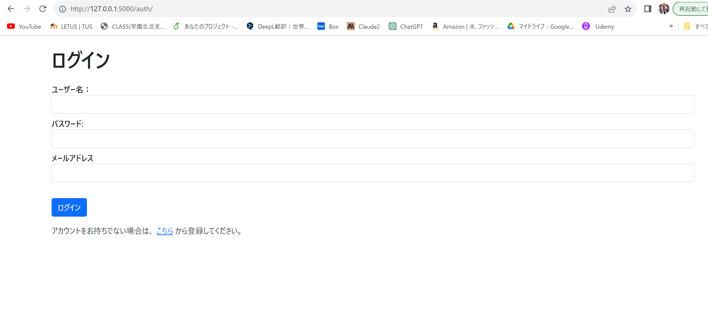

メモとタスク管理のwebアプリ

| 使用言語など | Python,Flask,HTML/CSS,Docker |
|---|---|
| 作成経緯 | このプログラムを作成する以前は、1つの言語のみを用いた開発しか行っていなかった。 そこで、私は応用力を身に着けるため、フロントエンドやデータベース、ログイン機能などの基本的な機能を実装する必要がある本プログラムを作成した。 また、夏の開発インターンシップに参加し、そこでweb開発について学ぶことができたためこの経験を活かして本アプリを開発したいと考えた。 |
| 内容 | Flaskを用いて本アプリを作成した。フロントエンド画面はHTML/CSSを用いて作成しており、データベースはSQLiteを使用した。 ログイン機能、メモ機能、タスク機能などの機能を実装している。 タスク機能では、未完了、進行中、完了の3つの状態を定義した。 データベースはログイン機能やメモなどの保存時に使用する。 |
| プログラムファイル |
Driveリンク
GitHub |
| 実行結果 | 実行結果リンク |